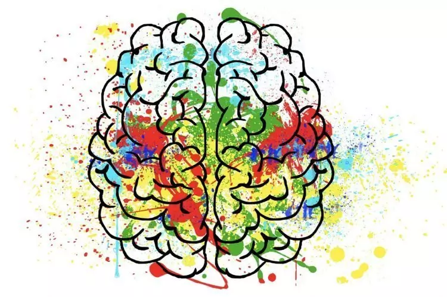

Autisme kan op veel verschillende manieren tot uiting komen Ruim 1% van de Nederlanders, ongeveer 200.000 mensen, heeft autisme. Het aantal mensen dat te maken heeft met autisme – zoals ouders, broers, zussen, partners, leraren en zorgverleners – is vele malen groter. Volgens psychiater en hoogleraar autisme Wouter Staal is autisme de ‘verzamelnaam voor gedragskenmerken die duiden op een kwetsbaarheid op de volgende gebieden: sociale interactie, communicatie, flexibiliteit in denken en handelen en het filteren en integreren van informatie.’ De meeste mensen met autisme hebben een normale tot hoge intelligentie. Naar schatting 30 % heeft een verstandelijke beperking.
Sterke punten die vaak in verband worden gebracht met autisme zijn onder andere: oog voor detail, analytisch denken, eerlijkheid, loyaliteit en technisch inzicht. Steeds vaker wordt dan ook de vraag gesteld of autisme per definitie altijd een ‘stoornis’ of ‘beperking’ is. Volgens de zogeheten neurodiversiteitsbeweging gaat het in essentie om een andere manier van zijn. Deze beweging heeft er grote problemen mee dat sommige ouders of organisaties (zoals bijvoorbeeld Autism Speaks) mensen met autisme willen ‘genezen’. In verband hiermee schreef de Amerikaanse autisme-activist Jim Sinclair het beroemde essay Rouw niet om ons.
Wetenschappers wereldwijd doen al jaren intensief onderzoek naar autisme. Desondanks is nog altijd onbekend wat autisme nou precies is. Ook bestaat er geen ‘biomarker’ – zoals een bloed- of DNA-test – waarmee autisme objectief kan worden vastgesteld. De diagnose wordt dan ook nog altijd gesteld op basis van gedragskenmerken. Toch is er ook al veel wél bekend. Bijvoorbeeld over de problemen waar mensen met autisme tegenaan kunnen lopen, maar ook over hun sterke eigenschappen. Vooral op sociaal gebied ondervinden veel mensen met autisme regelmatig problemen. Hun ‘sociale intuïtie’ lijkt minder goed – of anders – te zijn ontwikkeld.
Autisme kan op veel verschillende manieren tot uiting komen, daarom spreekt het psychiatrisch handboek DSM-5 van Autisme Spectrum Stoornis (ASS). De DSM-criteria voor autisme zijn onder meer: problemen op het gebied van sociale communicatie en sociale interactie; beperkte, repetitieve gedragspatronen, interesses of activiteiten en over- of ondergevoeligheid voor zintuiglijke prikkels. De vorige versie van dit handboek, de DSM IV, ging nog uit van meerdere afzonderlijke autismediagnoses zoals de Autistische Stoornis, de Stoornis van Asperger en de Pervasieve Onwikkelingsstoornis niet anderszins omschreven (PDD-NOS). Bijkomende diagnoses
Ook verwerken mensen met autisme informatie op een andere manier in de hersenen dan mensen zonder autisme. Dit geldt nadrukkelijk óók voor informatie die binnenkomt via de zintuigen. Veel mensen met autisme hebben te maken met sensorische over- of ondergevoeligheid. Autisme heeft invloed op alle levensterreinen, in alle levensfasen. De mate waarin is sterk individueel bepaald en hangt vaak ook af van iemands levensfase. Met name tijdens overgangsperioden hebben mensen met autisme een relatief grote kans om vast te lopen als zij niet tijdig de juiste begeleiding krijgen. Voorbeelden zijn de overgang van basis- naar voortgezet onderwijs, van onderwijs naar stage/ werk of van thuis bij de ouder(s)/verzorger(s) wonen naar zelfstandig wonen.
70% van de mensen met autisme kampt op enig moment in zijn leven met klachten als een stemmingsstoornis/depressie, een angst- en/of dwangstoornis, posttraumatische stress-stoornis (ptss), burn-out of een persoonlijkheidsstoornis. Bij de algemene bevolking is dit 40%. Ook ADHD en epilepsie komen relatief vaak voor bij mensen met autisme.